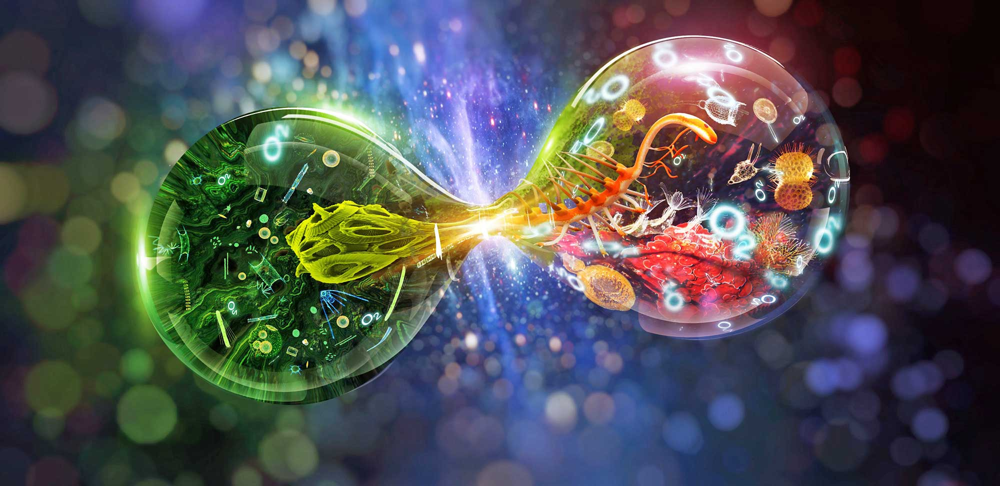

О́бщая биоло́гия (англ. General Biology, нем. Allgemeine Biologie) — наука (научная дисциплина, биологическая область знания, а также соответствующая учебная дисциплина), изучающая основные и общие для всех организмов закономерности их функционирования в процессе жизни. Задача общей биологии — выявление и объяснение общего, одинаково верного для всего многообразия организмов, общие закономерности развития природы, сущность жизни, её формы и развитие. Так как общая биология включает в себя ряд других самостоятельных наук, её часто вместо науки определяют как область биологии, исследующая наиболее общие, присущие всем живым существам закономерности. В российском УДК для общей биологии выделены разделы 574—577. Не следует путать общую биологию с теоретической биологией, частным случаем общей биологии, одной из основных задач которого является открытие и описание общих законов движения живой материи, преимущественно математическими методами и с позиций теории систем. Следует отметить, что по мнению ученых, в современной науке, результаты которой обычно публикуют в журналах с высоким импакт-фактором, такой науки как «Общая биология» (General Biology), аналогично «общей физике», не существует. Однако в ведущих университетах читаются курсы для бакалавров первого года обучения, то есть «Общая биология» существует лишь как вводный в биологию учебный курс. Теоретическое и гуманитарное значение общей биологии состоит в формировании материалистического мировоззрения, формировании экологического мышления. Развитие системного подхода позволило избавится от механицизма с одной стороны, и витализма с другой. В рамках общей биологии стали говорить о сложных системах, где количественный уровень сложности переходит в качественный. Именно уровень сложности делает материю живой, хотя внутри неё действуют физические и химические законы. По уровню сложности и разграничиваются естественные науки: атомы — исследует физика, молекулы — объект изучения химии, а с уровня макромолекул начинается биология. С уровня макромолекул появляются качественно новые свойства, характеризующие живую материю. Таким образом, живые системы не ограничиваются физическими и химическими законами, как это представлял физикализм или механицизм, и в то же время нет необходимости говорить о неком духе (витализм) для объяснения биологического уровня сложности.
